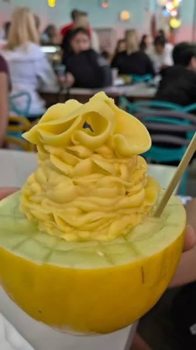

A Kureiji Candy é uma cafeteria onde cada receita combina criatividade e cultura oriental para criar momentos que vão muito além do sabor. Venha saborear nossos bolos, doces e cafés especiais!
Destaques

Sopro do Dragão
Suspiros ou pipocas doces (versão vegana), congeladas com nitrogênio líquido. Ao mastigar, solta fumaça pela boca e nariz! É doce, é show, é viral.

Tayaki de Panda
Pequenos doces em formato de ursinho, preparados para trazer uma dose de fofura e diversão a cada mordida.

Gomu Gomu no Mi
Você é fã de One Piece? Então não pode perder essas delícias! Temos um brigadeiro incrível inspirado na Gomu Gomu no Mi, a fruta do Luffy.

Sorvete na Fruta
Sabores tropicais e refrescantes servidos de um jeito totalmente único. Nossos gelatos artesanais são preparados e apresentados dentro da casca de frutas.